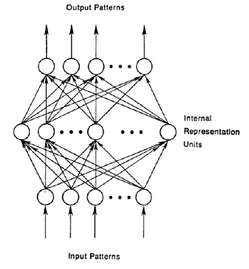

2.1.1 神经网络
一个典型的神经网络结构一般包括一个输入层x，一个输出层y，及一系列包含多个神经元的隐藏层h，如图2.1所示。通常情况下，每一层隐藏层会接收前一层神经元的所有输入，并对输入进行加权求和，之后在对输入的结果进行非线性变换：
$$ h{j}=F\left ( b{j}+\sum{i} w{ij}x_{i}\right)\tag {2.1}
$$
其中$$w_{ij}$$是控制输入输出单元之间的连接强度的权重，b_j是隐藏单元的增益，而F(.)是一个非线性函数，如sigmoid函数。

神经网络可以被看为是Rosenblatt感知机或多层感知机的现代化案例。虽然神经网络已经出现很多年了，但是直到最近它才被重视起来。导致神经网络知道现在才被重视的原因主要有以下几点，1、单层感知机无法实现一些简单的操作，如异或操作（XOR），直到提出多层感知机这一问题才被解决；2、在误差反向传递算法提出前，神经网络没有一套合适的训练方法；然而多层神经网络另一个很大的问题是它有很多参数，这就导致了需要很多的数据及很大的运算资源来对对参数进行训练。 深度学习中的一次重大的飞跃是基于受限制玻尔兹曼机（RBM）的逐层无监督预训练。受限制玻尔兹曼机可以看做是一个两层的神经网络，出于受限的原因，它仅有前馈连接。在图像识别中，基于无监督学习训练RBM的策略可以分为3步：1、对于每个像素，从随机初始化的权重$$w{ij}$$及偏置$$b{j}$$,每个隐藏层单元$$h{j}$$都是概率0-1之间的值$$p{j}$$。概率$$p_{j}$$可以被定义为：
$$ p{j}=\sigma\left( b{j}+\sum{i}x{i}w_{ij}\right)\tag {2.2}
$$
其中，$$\sigma\left(y\right)=1/\left(1+exp\left(-y\right)\right)$$。2、一旦隐藏层的状态由公式$$2.2$$得到，我们就可以根据隐藏层状态及公式$$p{i}=\sigma\left(b{i}+\sum{j}h{j}w{ij}\right)$$按概率对每个像素$$x{i}$$对图像进行重构。3、权重将根据输入层及隐藏层的重构误差来进行更新，更新公式如下：
$$ \Delta w{ij}=\alpha \left(\langle x{i}h{j}\rangle{input}-\langle x{i}h{j}\rangle_reconstruction\right)\tag {2.3}
$$
其中$$\alpha$$为学习速率，$$\langle x{i}h{j}\rangle$$是像素$$x{i}$$及隐藏单元$$h{j}$$的数量之和。整个过程循环$$N$$次，或者知道重构误差小于预先设定的阈值threshold，$$\tau$$。一旦一层训练结束，则该层的输出则作为下一层的输入，然后根据同样的优化策略来训练接下来的层。通常，当所有的神经网络层都经过预训练后，我们会使用带标签的数据通过梯度下降法来进一步微调网络。通过这种逐层预训练的策略使得对所需的带标签的训练样本的数据量大量减少，因为基于无监督预训练的RBM能为神经网络提供一套有用的初始化参数，从而简化了神经网络的训练难度。 基于堆叠RBM的神经网络最先作为一个降维器在人脸识别中成功应用，也就是被当做一种自动编码器。放宽松点将，自动编码器可以被定义成具有两部分逐层的神经网络。第一部分是编码部分，用来将输入数据转化为特征向量；第二部分是解码器部分，用来将特征向量映射回去，自动编码器的示意图如图2.2所示。自动编码器的参数通过输入和重构的结果之间的重构误差来学习得到。
在RBM自动编码器之后，又有几种自动编码器被提出。每种编码器都加入了不同的正则化来防止神经网络学习无关的特征而能学习到应对不同样本的不变性特征。典型的自动编码器包括稀疏自编码器（SAE）、降噪自编码器（DAE）以及收缩自编码器（CAE）。稀疏自编码器允许中间的表示层（例如由编码器输出的部分）的维度大于输入数据的维度，并通过惩罚项来强制使输出具有稀疏性。不同的是，降噪自编码器通过利用一个人为改变后的输入来重构一个洁净的输入来使学习到的特征更具有鲁棒性。相似的，收缩自编码器是在降噪自编码器的基础上进一步的惩罚对噪声更敏感的单元。更多关于不同降噪自编码器可以查看参考[7]。